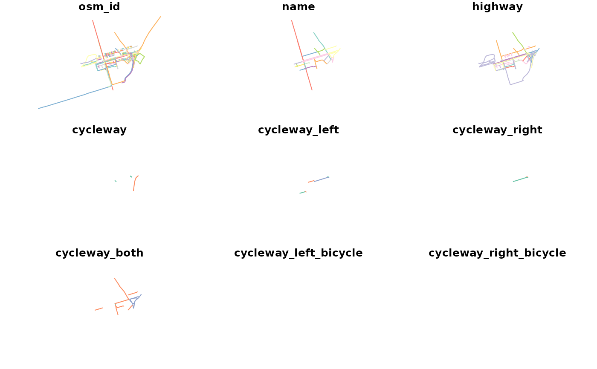

Data from edinburgh's OSM network
Examples
library(sf)
names(osm_edinburgh)
#> [1] "osm_id" "name"
#> [3] "highway" "cycleway"
#> [5] "cycleway_left" "cycleway_right"
#> [7] "cycleway_both" "cycleway_left_bicycle"
#> [9] "cycleway_right_bicycle" "cycleway_both_bicycle"
#> [11] "cycleway_left_segregated" "cycleway_right_segregated"
#> [13] "cycleway_both_segregated" "cycleway_lane"
#> [15] "cycleway_left_lane" "cycleway_right_lane"
#> [17] "cycleway_both_lane" "cycleway_surface"
#> [19] "cycleway_width" "cycleway_est_width"
#> [21] "cycleway_buffered_lane" "bicycle"
#> [23] "lanes" "foot"
#> [25] "footway" "path"
#> [27] "sidewalk" "segregated"
#> [29] "maxspeed" "width"
#> [31] "est_width" "lit"
#> [33] "oneway" "surface"
#> [35] "smoothness" "other_tags"
#> [37] "geometry"
head(osm_edinburgh)
#> Simple feature collection with 6 features and 36 fields
#> Geometry type: MULTILINESTRING
#> Dimension: XY
#> Bounding box: xmin: -3.194737 ymin: 55.95514 xmax: -3.186586 ymax: 55.95921
#> Geodetic CRS: WGS 84
#> osm_id name highway cycleway cycleway_left
#> 71 3992791 York Place tertiary <NA> separate
#> 185 4049896 Leith Street primary <NA> <NA>
#> 199 4071161 Broughton Street secondary <NA> <NA>
#> 200 4071162 Dublin Street residential <NA> <NA>
#> 248 4084027 North St Andrew Street pedestrian <NA> <NA>
#> 249 4084028 North St Andrew Lane service <NA> <NA>
#> cycleway_right cycleway_both cycleway_left_bicycle cycleway_right_bicycle
#> 71 no <NA> <NA> <NA>
#> 185 <NA> separate <NA> <NA>
#> 199 <NA> no <NA> <NA>
#> 200 <NA> <NA> <NA> <NA>
#> 248 <NA> <NA> <NA> <NA>
#> 249 <NA> <NA> <NA> <NA>
#> cycleway_both_bicycle cycleway_left_segregated cycleway_right_segregated
#> 71 <NA> <NA> <NA>
#> 185 <NA> <NA> <NA>
#> 199 <NA> <NA> <NA>
#> 200 <NA> <NA> <NA>
#> 248 <NA> <NA> <NA>
#> 249 <NA> <NA> <NA>
#> cycleway_both_segregated cycleway_lane cycleway_left_lane
#> 71 <NA> <NA> <NA>
#> 185 <NA> <NA> <NA>
#> 199 <NA> <NA> <NA>
#> 200 <NA> <NA> <NA>
#> 248 <NA> <NA> <NA>
#> 249 <NA> <NA> <NA>
#> cycleway_right_lane cycleway_both_lane cycleway_surface cycleway_width
#> 71 <NA> <NA> <NA> <NA>
#> 185 <NA> <NA> <NA> <NA>
#> 199 <NA> <NA> <NA> <NA>
#> 200 <NA> <NA> <NA> <NA>
#> 248 <NA> <NA> <NA> <NA>
#> 249 <NA> <NA> <NA> <NA>
#> cycleway_est_width cycleway_buffered_lane bicycle lanes foot footway path
#> 71 <NA> <NA> <NA> 1 <NA> <NA> <NA>
#> 185 <NA> <NA> <NA> 2 <NA> <NA> <NA>
#> 199 <NA> <NA> <NA> 2 <NA> <NA> <NA>
#> 200 <NA> <NA> <NA> <NA> <NA> <NA> <NA>
#> 248 <NA> <NA> <NA> <NA> yes <NA> <NA>
#> 249 <NA> <NA> <NA> <NA> <NA> <NA> <NA>
#> sidewalk segregated maxspeed width est_width lit oneway surface smoothness
#> 71 <NA> <NA> 20 mph <NA> <NA> <NA> yes asphalt <NA>
#> 185 <NA> <NA> 20 mph <NA> <NA> yes yes asphalt good
#> 199 both <NA> 20 mph <NA> <NA> yes <NA> asphalt good
#> 200 both <NA> 20 mph <NA> <NA> yes <NA> asphalt <NA>
#> 248 <NA> <NA> <NA> <NA> <NA> yes <NA> sett <NA>
#> 249 <NA> <NA> <NA> <NA> <NA> <NA> yes asphalt <NA>
#> other_tags
#> 71 "alt_name"=>"Ceàrn Eabhraig","embedded_rails"=>"tram","name:gd"=>"Ceàrn Eabhraig","wikidata"=>"Q102108491"
#> 185 "alt_name"=>"Sràid Lìte","destination"=>"Old Town"
#> 199 "incline"=>"up","sidewalk:both:surface"=>"paving_stones"
#> 200 "incline"=>"up"
#> 248 <NA>
#> 249 <NA>
#> geometry
#> 71 MULTILINESTRING ((-3.187851...
#> 185 MULTILINESTRING ((-3.186586...
#> 199 MULTILINESTRING ((-3.190781...
#> 200 MULTILINESTRING ((-3.194218...
#> 248 MULTILINESTRING ((-3.192841...
#> 249 MULTILINESTRING ((-3.194737...
plot(osm_edinburgh)
#> Warning: plotting the first 9 out of 36 attributes; use max.plot = 36 to plot all
